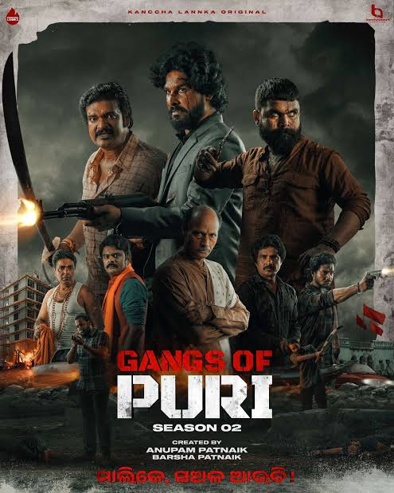

Welcome to our official Odia web series page. Watch now for free!
 ▶️ Watch NowAdSense ad will appear here
Odia cinema, also known as Ollywood, is the Odia-language film industry based in the Indian state of Odisha. The first Odia film, Sita Bibaha, was released in 1936, directed by Mohan Sundar Deb Goswami. Since then, the industry has grown steadily, producing socially impactful, mythological, and romantic dramas.
During the 1960s to 1980s, Odia films like Shesha Srabana, Balidan, and Matira Manisha received national acclaim. Legendary actors like Uttam Mohanty, Aparajita Mohanty, Bijay Mohanty, and Mahasweta Ray were key figures during this golden era.
In recent times, movies like Daman (2022) have gained both critical and commercial success, marking a new era in Odia filmmaking with strong stories and impactful direction.